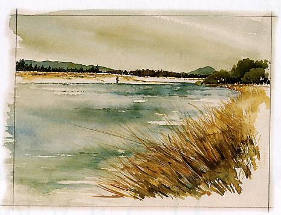
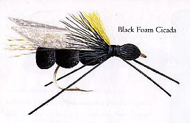
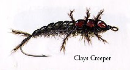
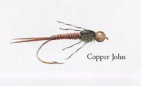
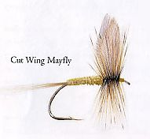
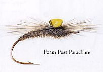
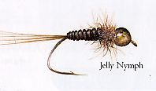
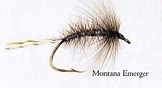
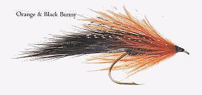

ティップス
４月 CLAYTON NICHOLL 氏 WAIRAU 川 上流部

WAIRAU 川 上流部

Black Foam Cicada

Clays Creeper

Copper John

Cut Wing Mayfly

Foam Post Parachute

Jelly Nymph

Montana Emerger

Orange & Black Bunny
フライタイヤー CLAYTON NICHOLL 氏 の紹介
クレイトン・ニコール氏は、数々の賞を受賞したワインの産地として定評あるマールボロー地方に住んでいる。この地はまた、ゆるやかに流れるスプリングクリークから、支派川を持つ大規模な河川まで、上手にプレゼンテーションされたドライフライやニンフを待ち構えている鱒が棲む数多くの川を、手軽に行ける距離に有していることを誇っている。さらに足を伸ばせば、原野の川には大物の鱒が潜んでいる。
クレイトンは８歳の時にスピニングロッドを手にして鱒釣りを始め、その後すぐにフライフィッシングへと進んだ。彼の弁によれば、ワイラウ川（Wairau River）には多くのブラウントラウトが棲んでいるという。
フライタイイングにおいては、彼は、続々と発表される新しいマテリアルを試してみるのが好きだと言っている。“私はいつも、一風変わったトラウトフライを巻くために、これまでとは違ったタイイングマテリアルに挑戦することに熱心なんだ。人とは違う考え方をする傾向が私にはあるようだね”
これらの記事・画像の著作権は、Michael Scheele 氏 にあります。無断での転載・二次利用をお断りいたします。
Copyright © 2003-2009 Michael Scheele All Rights Reserved.
NZ釣行に向けてのフライタイイング へ
ティップス 目次へ
サイトマップ
ホームへ
お問い合わせ